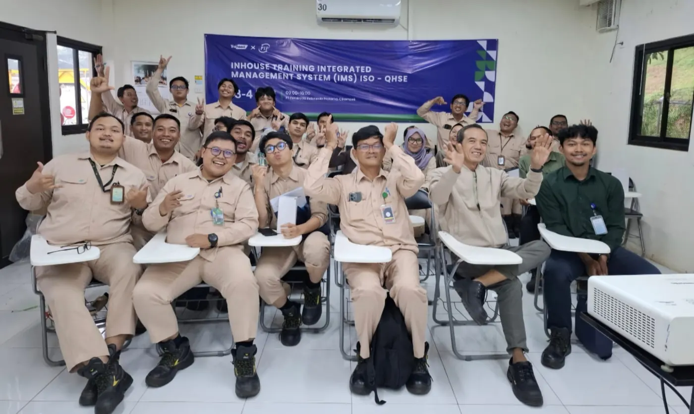
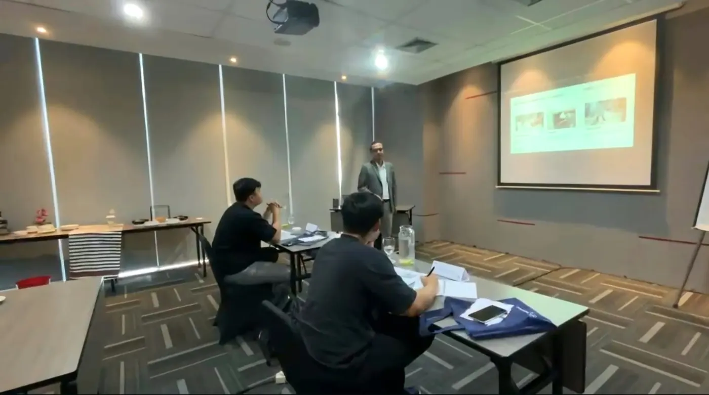
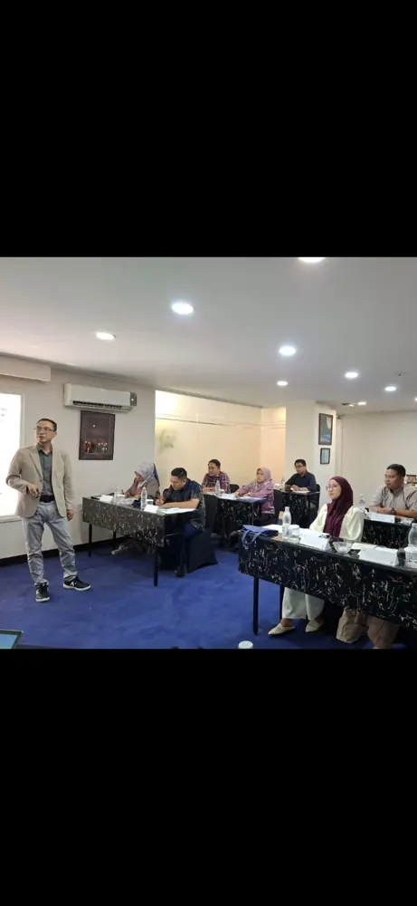
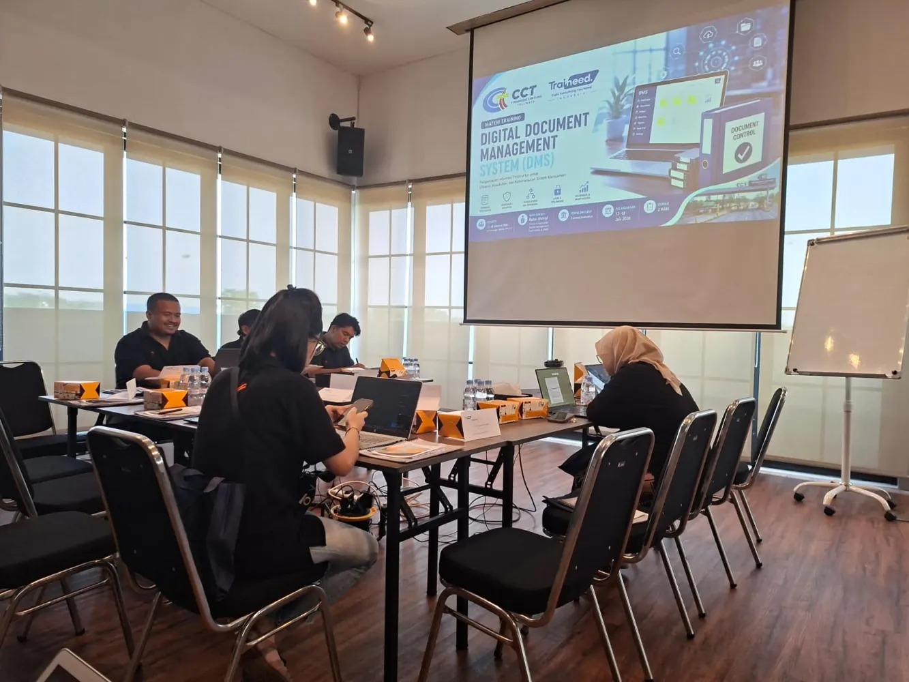
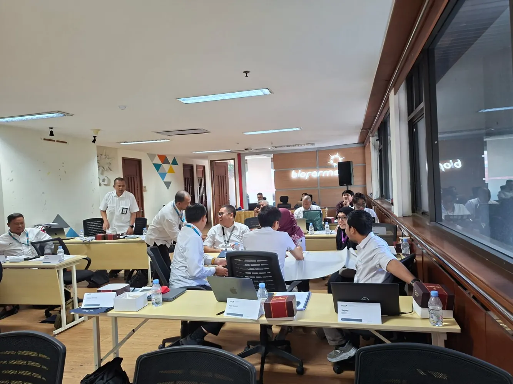
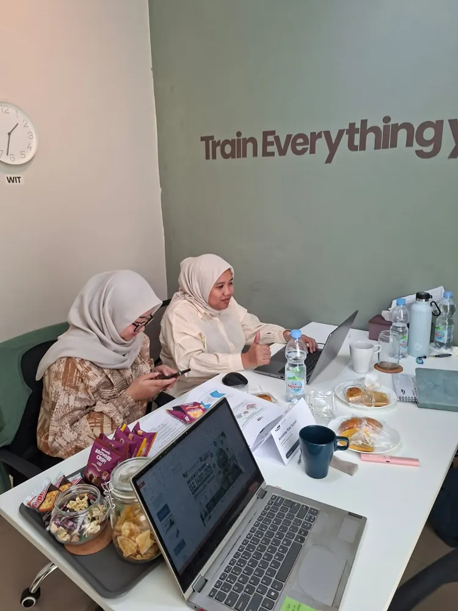

▣
Training & Development
Public training, in-house training, workshop, dan program pengembangan kompetensi berbasis kebutuhan organisasi.
Diskusikan kebutuhan ↗Partner profesional untuk pengembangan kompetensi, implementasi sistem manajemen, pemenuhan regulasi, dan pendampingan sertifikasi. Terintegrasi, terarah, dan berorientasi hasil.
Identifikasi kebutuhan, gap assessment, implementasi, evaluasi, hingga pendampingan proses sertifikasi.
Layanan dirancang untuk membantu organisasi meningkatkan kapabilitas, memenuhi kewajiban, dan membangun sistem yang efektif serta berkelanjutan.
Public training, in-house training, workshop, dan program pengembangan kompetensi berbasis kebutuhan organisasi.
Diskusikan kebutuhan ↗Konsultasi desain, penerapan, integrasi, dan peningkatan kinerja sistem manajemen berbasis standar.
Diskusikan kebutuhan ↗Pendampingan persiapan dan proses sertifikasi melalui lembaga atau otoritas berwenang.
Diskusikan kebutuhan ↗Identifikasi kewajiban, pemetaan regulasi, penilaian pemenuhan, dan rencana perbaikan.
Diskusikan kebutuhan ↗Audit internal, readiness assessment, gap analysis, temuan, dan penyusunan tindak lanjut CAPA.
Diskusikan kebutuhan ↗Pendampingan digitalisasi dokumentasi, workflow, DMS, dashboard, dan pengendalian proses.
Diskusikan kebutuhan ↗Ruang lingkup pendampingan disesuaikan dengan sektor industri, kondisi organisasi, dan skema sertifikasi yang berlaku.
Temukan pelatihan berbasis kebutuhan kerja dan standar. Cari topik, pahami ruang lingkup, lalu minta jadwal atau penawaran langsung.
Kelas terbuka untuk profesional dari berbagai organisasi, mengikuti jadwal yang diumumkan.
Lihat jadwal ↗Pelatihan interaktif dari tempat kerja atau rumah tanpa kehilangan ruang diskusi dan praktik.
Tanya kelas online ↗Program khusus perusahaan dengan kebutuhan, kasus, lokasi, dan jadwal yang disesuaikan.
Minta proposal ↗Konsep & KPI; tools/metode; identifikasi masalah; analisis data; simulasi; rencana perbaikan
Lihat Harga & Hitung Biaya ↗Konsep & ruang lingkup; proses inti; analisis kasus; penerapan worksheet; evaluasi; rencana tindak lanjut
Lihat Harga & Hitung Biaya ↗Konsep & ruang lingkup; proses inti; analisis kasus; penerapan worksheet; evaluasi; rencana tindak lanjut
Lihat Harga & Hitung Biaya ↗Konsep & ruang lingkup; proses inti; analisis kasus; penerapan worksheet; evaluasi; rencana tindak lanjut
Lihat Harga & Hitung Biaya ↗Konsep & ruang lingkup; proses inti; analisis kasus; penerapan worksheet; evaluasi; rencana tindak lanjut
Lihat Harga & Hitung Biaya ↗Konsep & ruang lingkup; proses inti; analisis kasus; penerapan worksheet; evaluasi; rencana tindak lanjut
Lihat Harga & Hitung Biaya ↗Konsep & ruang lingkup; proses inti; analisis kasus; penerapan worksheet; evaluasi; rencana tindak lanjut
Lihat Harga & Hitung Biaya ↗Konsep & KPI; tools/metode; identifikasi masalah; analisis data; simulasi; rencana perbaikan
Lihat Harga & Hitung Biaya ↗Konsep & ruang lingkup; proses inti; analisis kasus; penerapan worksheet; evaluasi; rencana tindak lanjut
Lihat Harga & Hitung Biaya ↗Kriteria & prinsip audit; program dan rencana; checklist; simulasi wawancara & bukti; temuan, laporan, CAPA
Lihat Harga & Hitung Biaya ↗Lingkup & klausul; konteks dan risiko; persyaratan proses; documented information; implementasi; evaluasi
Lihat Harga & Hitung Biaya ↗Kriteria & prinsip audit; program dan rencana; checklist; simulasi wawancara & bukti; temuan, laporan, CAPA
Lihat Harga & Hitung Biaya ↗Lingkup & klausul; konteks dan risiko; persyaratan proses; documented information; implementasi; evaluasi
Lihat Harga & Hitung Biaya ↗Lingkup & klausul; konteks dan risiko; persyaratan proses; documented information; implementasi; evaluasi
Lihat Harga & Hitung Biaya ↗Konsep & ruang lingkup; proses inti; analisis kasus; penerapan worksheet; evaluasi; rencana tindak lanjut
Lihat Harga & Hitung Biaya ↗Lingkup & klausul; konteks dan risiko; persyaratan proses; documented information; implementasi; evaluasi
Lihat Harga & Hitung Biaya ↗Kriteria & prinsip audit; program dan rencana; checklist; simulasi wawancara & bukti; temuan, laporan, CAPA
Lihat Harga & Hitung Biaya ↗Lingkup & klausul; konteks dan risiko; persyaratan proses; documented information; implementasi; evaluasi
Lihat Harga & Hitung Biaya ↗Kriteria & prinsip audit; program dan rencana; checklist; simulasi wawancara & bukti; temuan, laporan, CAPA
Lihat Harga & Hitung Biaya ↗Lingkup & klausul; konteks dan risiko; persyaratan proses; documented information; implementasi; evaluasi
Lihat Harga & Hitung Biaya ↗Kriteria & prinsip audit; program dan rencana; checklist; simulasi wawancara & bukti; temuan, laporan, CAPA
Lihat Harga & Hitung Biaya ↗Lingkup & klausul; konteks dan risiko; persyaratan proses; documented information; implementasi; evaluasi
Lihat Harga & Hitung Biaya ↗Kriteria & prinsip audit; program dan rencana; checklist; simulasi wawancara & bukti; temuan, laporan, CAPA
Lihat Harga & Hitung Biaya ↗Lingkup & klausul; konteks dan risiko; persyaratan proses; documented information; implementasi; evaluasi
Lihat Harga & Hitung Biaya ↗Lingkup & klausul; konteks dan risiko; persyaratan proses; documented information; implementasi; evaluasi
Lihat Harga & Hitung Biaya ↗Kriteria & prinsip audit; program dan rencana; checklist; simulasi wawancara & bukti; temuan, laporan, CAPA
Lihat Harga & Hitung Biaya ↗Lingkup & klausul; konteks dan risiko; persyaratan proses; documented information; implementasi; evaluasi
Lihat Harga & Hitung Biaya ↗Lingkup & klausul; konteks dan risiko; persyaratan proses; documented information; implementasi; evaluasi
Lihat Harga & Hitung Biaya ↗Lingkup & klausul; konteks dan risiko; persyaratan proses; documented information; implementasi; evaluasi
Lihat Harga & Hitung Biaya ↗Lingkup & klausul; konteks dan risiko; persyaratan proses; documented information; implementasi; evaluasi
Lihat Harga & Hitung Biaya ↗Kriteria & prinsip audit; program dan rencana; checklist; simulasi wawancara & bukti; temuan, laporan, CAPA
Lihat Harga & Hitung Biaya ↗Kriteria & prinsip audit; program dan rencana; checklist; simulasi wawancara & bukti; temuan, laporan, CAPA
Lihat Harga & Hitung Biaya ↗Konsep & ruang lingkup; proses inti; analisis kasus; penerapan worksheet; evaluasi; rencana tindak lanjut
Lihat Harga & Hitung Biaya ↗Konsep & ruang lingkup; proses inti; analisis kasus; penerapan worksheet; evaluasi; rencana tindak lanjut
Lihat Harga & Hitung Biaya ↗Konsep & ruang lingkup; proses inti; analisis kasus; penerapan worksheet; evaluasi; rencana tindak lanjut
Lihat Harga & Hitung Biaya ↗Konsep & ruang lingkup; proses inti; analisis kasus; penerapan worksheet; evaluasi; rencana tindak lanjut
Lihat Harga & Hitung Biaya ↗Konsep & ruang lingkup; proses inti; analisis kasus; penerapan worksheet; evaluasi; rencana tindak lanjut
Lihat Harga & Hitung Biaya ↗Konsep & ruang lingkup; proses inti; analisis kasus; penerapan worksheet; evaluasi; rencana tindak lanjut
Lihat Harga & Hitung Biaya ↗Persyaratan & regulasi; PRP/GMP; analisis bahaya; dokumentasi; verifikasi; studi kasus fasilitas/proses
Lihat Harga & Hitung Biaya ↗Persyaratan & regulasi; PRP/GMP; analisis bahaya; dokumentasi; verifikasi; studi kasus fasilitas/proses
Lihat Harga & Hitung Biaya ↗Persyaratan & regulasi; PRP/GMP; analisis bahaya; dokumentasi; verifikasi; studi kasus fasilitas/proses
Lihat Harga & Hitung Biaya ↗Persyaratan & regulasi; PRP/GMP; analisis bahaya; dokumentasi; verifikasi; studi kasus fasilitas/proses
Lihat Harga & Hitung Biaya ↗Kriteria & prinsip audit; program dan rencana; checklist; simulasi wawancara & bukti; temuan, laporan, CAPA
Lihat Harga & Hitung Biaya ↗Konsep & ruang lingkup; proses inti; analisis kasus; penerapan worksheet; evaluasi; rencana tindak lanjut
Lihat Harga & Hitung Biaya ↗Persyaratan & regulasi; PRP/GMP; analisis bahaya; dokumentasi; verifikasi; studi kasus fasilitas/proses
Lihat Harga & Hitung Biaya ↗Persyaratan & regulasi; PRP/GMP; analisis bahaya; dokumentasi; verifikasi; studi kasus fasilitas/proses
Lihat Harga & Hitung Biaya ↗Kriteria & prinsip audit; program dan rencana; checklist; simulasi wawancara & bukti; temuan, laporan, CAPA
Lihat Harga & Hitung Biaya ↗Persyaratan & regulasi; PRP/GMP; analisis bahaya; dokumentasi; verifikasi; studi kasus fasilitas/proses
Lihat Harga & Hitung Biaya ↗Persyaratan & regulasi; PRP/GMP; analisis bahaya; dokumentasi; verifikasi; studi kasus fasilitas/proses
Lihat Harga & Hitung Biaya ↗Konsep & ruang lingkup; proses inti; analisis kasus; penerapan worksheet; evaluasi; rencana tindak lanjut
Lihat Harga & Hitung Biaya ↗Konsep & ruang lingkup; proses inti; analisis kasus; penerapan worksheet; evaluasi; rencana tindak lanjut
Lihat Harga & Hitung Biaya ↗Konsep & ruang lingkup; proses inti; analisis kasus; penerapan worksheet; evaluasi; rencana tindak lanjut
Lihat Harga & Hitung Biaya ↗Konsep & ruang lingkup; proses inti; analisis kasus; penerapan worksheet; evaluasi; rencana tindak lanjut
Lihat Harga & Hitung Biaya ↗Lingkup & klausul; konteks dan risiko; persyaratan proses; documented information; implementasi; evaluasi
Lihat Harga & Hitung Biaya ↗Kriteria & prinsip audit; program dan rencana; checklist; simulasi wawancara & bukti; temuan, laporan, CAPA
Lihat Harga & Hitung Biaya ↗Konsep & ruang lingkup; proses inti; analisis kasus; penerapan worksheet; evaluasi; rencana tindak lanjut
Lihat Harga & Hitung Biaya ↗Pemetaan regulasi; persyaratan bukti; penyiapan dokumen; simulasi evaluasi; gap dan action plan
Lihat Harga & Hitung Biaya ↗Pemetaan regulasi; persyaratan bukti; penyiapan dokumen; simulasi evaluasi; gap dan action plan
Lihat Harga & Hitung Biaya ↗Konsep & KPI; tools/metode; identifikasi masalah; analisis data; simulasi; rencana perbaikan
Lihat Harga & Hitung Biaya ↗Konsep & KPI; tools/metode; identifikasi masalah; analisis data; simulasi; rencana perbaikan
Lihat Harga & Hitung Biaya ↗Konsep & KPI; tools/metode; identifikasi masalah; analisis data; simulasi; rencana perbaikan
Lihat Harga & Hitung Biaya ↗Konsep & KPI; tools/metode; identifikasi masalah; analisis data; simulasi; rencana perbaikan
Lihat Harga & Hitung Biaya ↗Konsep & KPI; tools/metode; identifikasi masalah; analisis data; simulasi; rencana perbaikan
Lihat Harga & Hitung Biaya ↗Konsep & KPI; tools/metode; identifikasi masalah; analisis data; simulasi; rencana perbaikan
Lihat Harga & Hitung Biaya ↗Konsep & KPI; tools/metode; identifikasi masalah; analisis data; simulasi; rencana perbaikan
Lihat Harga & Hitung Biaya ↗Konsep & KPI; tools/metode; identifikasi masalah; analisis data; simulasi; rencana perbaikan
Lihat Harga & Hitung Biaya ↗Lingkup & klausul; konteks dan risiko; persyaratan proses; documented information; implementasi; evaluasi
Lihat Harga & Hitung Biaya ↗Kriteria & prinsip audit; program dan rencana; checklist; simulasi wawancara & bukti; temuan, laporan, CAPA
Lihat Harga & Hitung Biaya ↗Konsep & ruang lingkup; proses inti; analisis kasus; penerapan worksheet; evaluasi; rencana tindak lanjut
Lihat Harga & Hitung Biaya ↗Kriteria & prinsip audit; program dan rencana; checklist; simulasi wawancara & bukti; temuan, laporan, CAPA
Lihat Harga & Hitung Biaya ↗Konsep & ruang lingkup; proses inti; analisis kasus; penerapan worksheet; evaluasi; rencana tindak lanjut
Lihat Harga & Hitung Biaya ↗Konsep & ruang lingkup; proses inti; analisis kasus; penerapan worksheet; evaluasi; rencana tindak lanjut
Lihat Harga & Hitung Biaya ↗Konsep & ruang lingkup; proses inti; analisis kasus; penerapan worksheet; evaluasi; rencana tindak lanjut
Lihat Harga & Hitung Biaya ↗Konsep & ruang lingkup; proses inti; analisis kasus; penerapan worksheet; evaluasi; rencana tindak lanjut
Lihat Harga & Hitung Biaya ↗Konsep & ruang lingkup; proses inti; analisis kasus; penerapan worksheet; evaluasi; rencana tindak lanjut
Lihat Harga & Hitung Biaya ↗Kriteria & prinsip audit; program dan rencana; checklist; simulasi wawancara & bukti; temuan, laporan, CAPA
Lihat Harga & Hitung Biaya ↗Lingkup & klausul; konteks dan risiko; persyaratan proses; documented information; implementasi; evaluasi
Lihat Harga & Hitung Biaya ↗Lingkup & klausul; konteks dan risiko; persyaratan proses; documented information; implementasi; evaluasi
Lihat Harga & Hitung Biaya ↗Persyaratan & regulasi; PRP/GMP; analisis bahaya; dokumentasi; verifikasi; studi kasus fasilitas/proses
Lihat Harga & Hitung Biaya ↗Persyaratan & regulasi; PRP/GMP; analisis bahaya; dokumentasi; verifikasi; studi kasus fasilitas/proses
Lihat Harga & Hitung Biaya ↗Lingkup & klausul; konteks dan risiko; persyaratan proses; documented information; implementasi; evaluasi
Lihat Harga & Hitung Biaya ↗Lingkup & klausul; konteks dan risiko; persyaratan proses; documented information; implementasi; evaluasi
Lihat Harga & Hitung Biaya ↗Konsep & ruang lingkup; proses inti; analisis kasus; penerapan worksheet; evaluasi; rencana tindak lanjut
Lihat Harga & Hitung Biaya ↗Pemetaan regulasi; persyaratan bukti; penyiapan dokumen; simulasi evaluasi; gap dan action plan
Lihat Harga & Hitung Biaya ↗Konsep & KPI; tools/metode; identifikasi masalah; analisis data; simulasi; rencana perbaikan
Lihat Harga & Hitung Biaya ↗Persyaratan & regulasi; PRP/GMP; analisis bahaya; dokumentasi; verifikasi; studi kasus fasilitas/proses
Lihat Harga & Hitung Biaya ↗Persyaratan & regulasi; PRP/GMP; analisis bahaya; dokumentasi; verifikasi; studi kasus fasilitas/proses
Lihat Harga & Hitung Biaya ↗Persyaratan & regulasi; PRP/GMP; analisis bahaya; dokumentasi; verifikasi; studi kasus fasilitas/proses
Lihat Harga & Hitung Biaya ↗Lingkup & klausul; konteks dan risiko; persyaratan proses; documented information; implementasi; evaluasi
Lihat Harga & Hitung Biaya ↗Program tidak ditemukan. Hubungi kami untuk training khusus sesuai kebutuhan organisasi.
Topik merupakan katalog penawaran, bukan pernyataan bahwa semua kelas memiliki batch aktif atau akreditasi tertentu. Silakan konfirmasi jadwal, silabus, investasi, dan jenis sertifikat sebelum mendaftar.
Belajar lebih nyaman dengan dukungan materi dan fasilitas yang disesuaikan dengan jenis kelas.
Public Training Tatap Muka
Modul, buku catatan kecil & pena, suvenir, dan sertifikat pelatihan termasuk jika tercantum dalam paket kelas yang dipilih.
Online Training
Modul dan sertifikat dalam format digital. Pengiriman perlengkapan fisik hanya jika dicantumkan dalam penawaran.
In-House Training
Fasilitas dan format sertifikat disesuaikan dengan quotation dan kesepakatan perusahaan.
Harga referensi untuk program reguler. Dapatkan silabus dan penawaran sesuai kebutuhan organisasi Anda.
Program ISO & sistem manajemen standar, pembelajaran interaktif dan sertifikat pelatihan digital. Fasilitas peserta mengikuti ketentuan paket dan quotation resmi.
Minta Jadwal & Silabus →Kelas tatap muka dengan diskusi, studi kasus, materi, evaluasi belajar dan sertifikat pelatihan. Fasilitas peserta mengikuti ketentuan paket dan quotation resmi.
Tanyakan Ketersediaan →In-house online, maksimal 20 peserta, satu trainer. Onsite Professional Rp18.500.000 dan Advanced Rp24.500.000 untuk 2 hari. Fasilitas peserta mengikuti ketentuan paket dan quotation resmi.
Minta Proposal Korporat →| Program | Durasi | Online / peserta | Public offline / peserta |
|---|---|---|---|
| 5R / 5S Management Improvement | 1 hari | Rp1.450.000 | Rp2.450.000 |
| Business Process Management | 2 hari | Rp2.250.000 | Rp3.850.000 |
| Business Process Mapping and Documentation SOP | 2 hari | Rp2.250.000 | Rp3.850.000 |
| Business Process Analysis and Improvement | 2 hari | Rp2.250.000 | Rp3.850.000 |
| Business Process Re-Engineering | 2 hari | Rp2.250.000 | Rp3.850.000 |
| SOP and Documentation Development | 2 hari | Rp2.250.000 | Rp3.850.000 |
| Document Control | 2 hari | Rp2.250.000 | Rp3.850.000 |
| Project Quality Management | 2 hari | Rp2.250.000 | Rp3.850.000 |
| IATF 16949 Awareness | 2 hari | Rp2.250.000 | Rp3.850.000 |
| Internal Quality Audit IATF 16949 | 2 hari | Rp2.250.000 | Rp3.850.000 |
| ISO 9001 Awareness | 2 hari | Rp2.250.000 | Rp3.850.000 |
| ISO 9001 Internal Quality Audit | 2 hari | Rp2.250.000 | Rp3.850.000 |
| Compliance Management ISO 37301 | 2 hari | Rp2.500.000 | Rp4.250.000 |
| Anti-Bribery Management ISO 37001 | 2 hari | Rp2.500.000 | Rp4.250.000 |
| Good Corporate Governance | 2 hari | Rp2.500.000 | Rp4.250.000 |
| ISO/IEC 27001 Awareness | 2 hari | Rp2.550.000 | Rp4.400.000 |
| ISO/IEC 27001 Internal Auditor | 2 hari | Rp2.550.000 | Rp4.400.000 |
| ISO 14001 Awareness | 2 hari | Rp2.250.000 | Rp3.850.000 |
| ISO 14001 Internal Auditor | 2 hari | Rp2.250.000 | Rp3.850.000 |
| ISO 45001 Awareness | 2 hari | Rp2.250.000 | Rp3.850.000 |
| ISO 45001 Internal Auditor | 2 hari | Rp2.250.000 | Rp3.850.000 |
| Integrated QHSE Awareness | 2 hari | Rp2.250.000 | Rp3.850.000 |
| Integrated QHSE Internal Auditor | 2 hari | Rp2.250.000 | Rp3.850.000 |
| ISO 9001 Requirements | 2 hari | Rp2.250.000 | Rp3.850.000 |
| ISO 9001 Implementation | 2 hari | Rp2.250.000 | Rp3.850.000 |
| ISO 9001 Internal Auditor | 2 hari | Rp2.250.000 | Rp3.850.000 |
| ISO 45001 Requirements | 2 hari | Rp2.250.000 | Rp3.850.000 |
| ISO 45001 Implementation | 2 hari | Rp2.250.000 | Rp3.850.000 |
| Integrated Management System ISO 9001, 14001 & 45001 Requirements | 2 hari | Rp2.250.000 | Rp3.850.000 |
| Integrated Management System Implementation | 2 hari | Rp2.250.000 | Rp3.850.000 |
| Integrated Management System Internal Auditor | 2 hari | Rp2.250.000 | Rp3.850.000 |
| ISO 14001 Internal Auditor | 2 hari | Rp2.250.000 | Rp3.850.000 |
| Training Sistem Rantai Pasok: Strategi Meningkatkan Efisiensi dan Kinerja Operasional | 2 hari | Rp2.450.000 | Rp4.150.000 |
| Training Effective Loss Prevention Strategies | 2 hari | Rp2.450.000 | Rp4.150.000 |
| Laboratorium & Kalibrasi (kelompok program) | 2 hari | Rp2.500.000 | Rp4.300.000 |
| Manajemen Operasional Rumah Sakit (kelompok program) | 2 hari | Rp2.450.000 | Rp4.150.000 |
| Manajemen Mutu & Standar (kelompok program) | 2 hari | Rp2.250.000 | Rp3.850.000 |
| Logistik Rantai Pasok (kelompok program) | 2 hari | Rp2.450.000 | Rp4.150.000 |
| GMP – Good Manufacturing Practices | 2 hari | Rp2.400.000 | Rp4.100.000 |
| GHP – Good Hygiene Practices | 2 hari | Rp2.400.000 | Rp4.100.000 |
| HACCP Codex 2020 | 2 hari | Rp2.400.000 | Rp4.100.000 |
| ISO 22000 – FSMS Requirements | 2 hari | Rp2.400.000 | Rp4.100.000 |
| ISO 22000 – Internal Auditor | 2 hari | Rp2.400.000 | Rp4.100.000 |
| FSSC 22000 Awareness | 2 hari | Rp2.400.000 | Rp4.100.000 |
| Food Handler & Hygiene Sanitation | 2 hari | Rp2.400.000 | Rp4.100.000 |
| Sistem Jaminan Produk Halal (SJPH) | 2 hari | Rp2.400.000 | Rp4.100.000 |
| Internal Audit Halal | 2 hari | Rp2.400.000 | Rp4.100.000 |
| Food Fraud & Food Defense | 2 hari | Rp2.400.000 | Rp4.100.000 |
| Food Allergen Management | 2 hari | Rp2.400.000 | Rp4.100.000 |
| Traceability & Product Recall | 2 hari | Rp2.400.000 | Rp4.100.000 |
| SMK3 PP 50/2012 | 2 hari | Rp2.250.000 | Rp3.850.000 |
| HIRADC / HIRARC | 2 hari | Rp2.250.000 | Rp3.850.000 |
| Pengoperasian SIMPEL – Pelaporan Lingkungan | 2 hari | Rp2.250.000 | Rp3.850.000 |
| ISO/IEC 17025 Requirements | 2 hari | Rp2.500.000 | Rp4.300.000 |
| ISO/IEC 17025 Internal Auditor | 2 hari | Rp2.500.000 | Rp4.300.000 |
| Laboratory Risk Assessment | 2 hari | Rp2.500.000 | Rp4.300.000 |
| TKDN Calculation & Evidence | 2 hari | Rp2.600.000 | Rp4.450.000 |
| CPB PKRT / CPAKB | 2 hari | Rp2.600.000 | Rp4.450.000 |
| QA/QC Management | 2 hari | Rp2.250.000 | Rp3.850.000 |
| Statistical Process Control (SPC) | 2 hari | Rp2.250.000 | Rp3.850.000 |
| Seven QC Tools | 2 hari | Rp2.250.000 | Rp3.850.000 |
| Kaizen & Continuous Improvement | 2 hari | Rp2.250.000 | Rp3.850.000 |
| Quality Control Circle (QCC) | 2 hari | Rp2.250.000 | Rp3.850.000 |
| Total Productive Maintenance (TPM) | 2 hari | Rp2.250.000 | Rp3.850.000 |
| Failure Mode and Effects Analysis (FMEA) | 2 hari | Rp2.250.000 | Rp3.850.000 |
| Cost of Quality (CoQ) | 2 hari | Rp2.250.000 | Rp3.850.000 |
| Document Management System (DMS) | 2 hari | Rp2.350.000 | Rp4.000.000 |
| ISO 19011 Internal Audit Techniques | 2 hari | Rp2.500.000 | Rp4.300.000 |
| SMETA 4 Pillars Awareness | 2 hari | Rp2.500.000 | Rp4.300.000 |
| Supplier Social Compliance Audit | 2 hari | Rp2.500.000 | Rp4.300.000 |
| Anti-Bribery Due Diligence | 2 hari | Rp2.500.000 | Rp4.300.000 |
| Fraud Risk Assessment | 2 hari | Rp2.500.000 | Rp4.300.000 |
| Training of Trainers (ToT) | 2 hari | Rp2.350.000 | Rp4.000.000 |
| Training Needs Analysis (TNA) | 2 hari | Rp2.350.000 | Rp4.000.000 |
| Competency-Based Assessment | 2 hari | Rp2.350.000 | Rp4.000.000 |
| ISO 9001 — Awareness & Internal Audit | 2 hari | Rp2.250.000 | Rp3.850.000 |
| ISO 14001 — EMS Implementation | 2 hari | Rp2.250.000 | Rp3.850.000 |
| ISO 45001 — OH&S Management | 2 hari | Rp2.250.000 | Rp3.850.000 |
| Codex HACCP & ISO 22000 | 2 hari | Rp2.400.000 | Rp4.100.000 |
| Sistem Jaminan Produk Halal (SJPH) | 2 hari | Rp2.400.000 | Rp4.100.000 |
| ISO 37001 — Anti-Bribery | 2 hari | Rp2.500.000 | Rp4.250.000 |
| ISO/IEC 17025 — Laboratory Management | 2 hari | Rp2.500.000 | Rp4.300.000 |
| SMETA — Four Pillars | 2 hari | Rp2.500.000 | Rp4.300.000 |
| TKDN & SNI Compliance Readiness | 2 hari | Rp2.600.000 | Rp4.450.000 |
| 5S / 5R — Workplace Organization | 1 hari | Rp1.450.000 | Rp2.450.000 |
| HACCP — Codex General Principles of Food Hygiene | 2 hari | Rp2.400.000 | Rp4.100.000 |
| GMP — Good Manufacturing Practices | 2 hari | Rp2.400.000 | Rp4.100.000 |
| FSMS — Food Safety Management System (ISO 22000) | 2 hari | Rp2.400.000 | Rp4.100.000 |
| IMS — Integrated Management System | 2 hari | Rp2.250.000 | Rp3.850.000 |
| Paket | Metode | Investasi / perusahaan | Fasilitas utama |
|---|---|---|---|
| Essential | Online | Rp12.500.000 | Materi standar, pre/post-test, sertifikat digital |
| Professional | Onsite | Rp18.500.000 | Penyesuaian materi, workshop dan evaluasi |
| Advanced | Onsite | Rp24.500.000 | Studi kasus klien, template kerja, satu sesi tindak lanjut |
Seluruh paket maksimal 20 peserta, 1 trainer, 2 hari. Venue dan konsumsi disediakan klien. Transportasi/akomodasi luar Jabodetabek, sertifikasi pihak ketiga dan pajak bila berlaku dihitung tersendiri dalam quotation.
Gunakan kalkulator untuk mengetahui harga dasar yang akan dibayarkan sebelum pajak atau biaya tambahan yang tercantum pada penawaran resmi.
Bukan tagihan otomatis. Harga final, pajak bila berlaku, ketersediaan kelas, dan biaya tambahan dikonfirmasi dalam quotation. Untuk in-house berlaku maksimal 20 peserta; penawaran khusus diperlukan untuk jumlah lebih besar.
Jadwal dapat diperbarui dan pelaksanaan bergantung pada konfirmasi penyelenggaraan. Untuk kebutuhan in-house, tentukan tanggal bersama tim kami.
| Program | Format | Jadwal | Aksi |
|---|---|---|---|
| ISO 37001 — Anti-Bribery | Online | Konfirmasi batch | Tanya Jadwal ↗ |
| Quality Assurance & Quality Control | Public | Konfirmasi batch | Tanya Jadwal ↗ |
| ISO/IEC 17025 | Public | Konfirmasi batch | Tanya Jadwal ↗ |
| Codex HACCP | Online | Konfirmasi batch | Tanya Jadwal ↗ |
| Custom Corporate Training | In-House / Online | Sesuai permintaan | Minta Penawaran ↗ |
Untuk menghindari informasi kedaluwarsa, tanggal pelaksanaan dan harga ditampilkan setelah dikonfirmasi oleh administrator.
Public training dilaksanakan dalam kelas terbuka dengan jadwal tertentu. In-house training dirancang secara khusus sesuai kebutuhan, peserta, dan kondisi organisasi.
Ya. Pilih program atau isi formulir permintaan layanan agar tim kami dapat menyiapkan cakupan dan penawaran yang sesuai.
XSys berperan dalam konsultasi dan pendampingan. Keputusan dan penerbitan sertifikasi atau dokumen resmi dilakukan oleh lembaga atau otoritas berwenang.
Gunakan formulir kebutuhan atau hubungi tim XSys untuk mendiskusikan program khusus.
Kami memandang kepatuhan bukan hanya sebagai kewajiban administratif, melainkan bagian dari sistem kerja yang lebih baik dan berdampak pada kinerja organisasi.
Ceritakan kebutuhan organisasi Anda. Kami bantu arahkan langkah berikutnya.
Organisasi yang tercatat dalam pengalaman profesional trainer dan konsultan kami. Penyebutan nama tidak berarti seluruh pekerjaan merupakan kontrak langsung XSys•Advisory.
Logo yang sumbernya teridentifikasi ditampilkan sebagai identitas organisasi. Untuk identitas yang belum terverifikasi, nama dan inisial tetap digunakan. Pengalaman profesional tidak berarti endorsement atau kontrak langsung XSys.Advisory.
Dokumentasi kegiatan pelatihan dan workshop dari pengalaman profesional. Foto yang ditampilkan dipilih dari dokumentasi yang diberikan, tanpa mengklaim seluruh kegiatan diselenggarakan langsung oleh XSys.Advisory.






Klik foto untuk melihat ukuran lebih besar. Dokumentasi berasal dari kegiatan profesional dan digunakan sebagai ilustrasi pengalaman training.
Pernah mengikuti kegiatan bersama XSys.Advisory? Kami menerima pengalaman, saran, kritik, dan foto kegiatan Anda. Setiap kiriman akan ditinjau oleh tim XSys.Advisory sebelum dipertimbangkan untuk ditayangkan di website.
Sampaikan kebutuhan Anda melalui formulir singkat. Tim XSys•Advisory dapat dihubungi melalui WhatsApp atau email. Untuk Telegram, akun tujuan akan dilengkapi setelah dikonfirmasi.
Komentar dan dokumentasi ditampilkan setelah peninjauan dan persetujuan tim XSys.Advisory.
Belum ada testimoni yang diterbitkan.